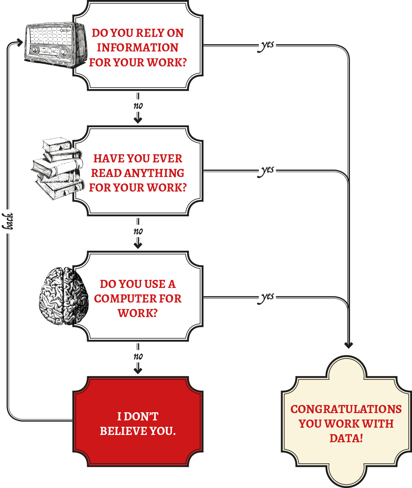
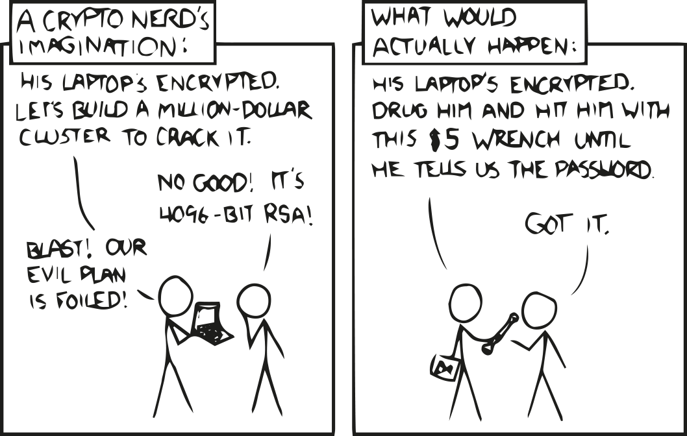
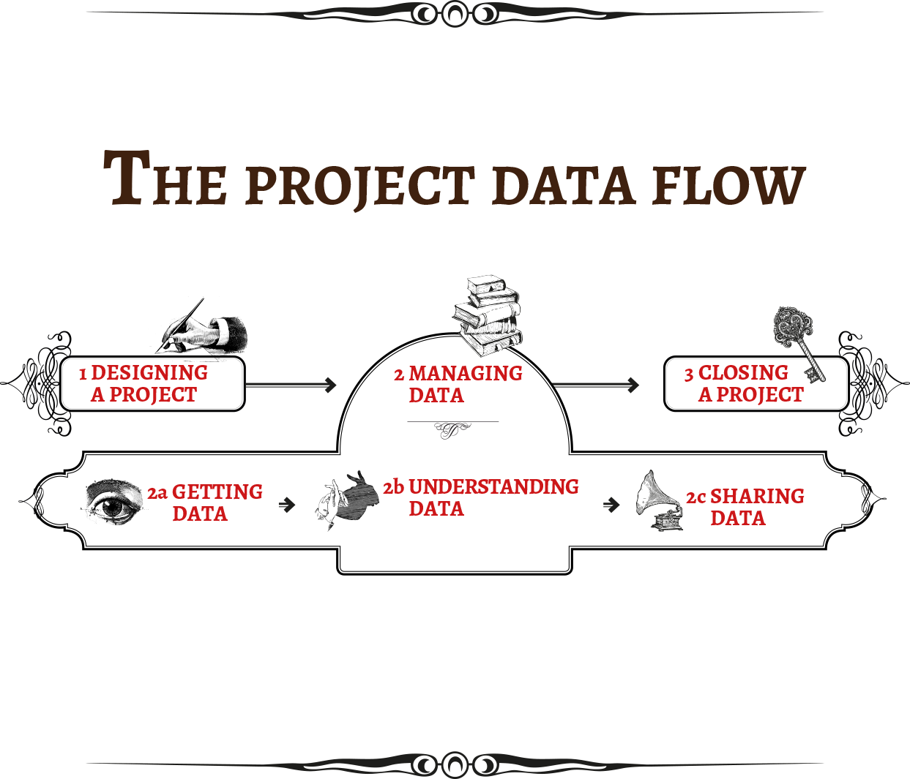

Introduction
what this handbook has to offer


About this book
This book is offered as a first attempt to understand what responsible data means in the context of international development programming. We have taken a broad view of development, opting not to be prescriptive about who the perfect “target audience” for this effort is within the space. We also anticipate that some of the methods and lessons here may have resonance for related fields and practitioners.
We suggest a number of questions and issues to consider, but specific responsible data challenges will always be identified through individual project contexts. As such, this book is not authoritative, but is intended to support thoughtful and responsible thinking as the development community grapples with relatively new social and ethical challenges stemming from data use.
This book builds on a number of resources and strategies developed in academia, human rights and advocacy, but aims to focus on international development practitioners. As such, we touch upon issues specifically relevant to development practitioners and intermediaries working to improve the lives and livelihoods of people.
The group of contributors working on this book brings together decades of experience in the sector of international development; our first hand experiences of horrific misuse of data within the sector, combined with anecdotal stories of (mis)treatment and usage of data having catastrophic effects within some of the world’s most vulnerable communities, has highlighted for us the need for a book tackling issues of how we can all deal with data in a responsible and respectful way.
Why this book?
What made 12 people descend upon a farmhouse in the Netherlands for three days, dedicating intense time and effort into creating this book from scratch?
It might have been an uneasy sense that the hype about a data revolution is overlooking both the rights of the people we’re seeking to help and the potential for harm that accompanies data and technology in the development context. The authors of this book believe that responsibility and ethics are integral to the handling of development data, and that as we continue to use data in new, powerful and innovative ways, we have a moral obligation to do so responsibly and without causing or facilitating harm. At the same time, we are keenly aware that actually implementing responsible data practices involves navigating a very complex, and fast-evolving, minefield - one that most practitioners, fieldworkers, project designers and technologists have little expertise in. Yet.
We could have written another white paper that only we would read, or organised yet another conference that people would forget about. We tried instead to pool our collective expertise and concerns, to produce a practical guide that would help our peers and the wider development community to think through these issues. With the support of Hivos, Book Sprints and the engine room, this book was collaboratively produced (in the Bietenhaven farm, 40 minutes outside of Amsterdam) in just three days.
The team: Kristin Antin (engine room), Rory Byrne (Security First), Tin Geber (the engine room), Sacha van Geffen (Greenhost), Julia Hoffmann (Hivos), Malavika Jayaram (Berkman Center for Internet & Society, Harvard), Maliha Khan (Oxfam US), Tania Lee (International Rescue Committee), Zara Rahman (Open Knowledge), Crystal Simeoni (Hivos), Friedhelm Weinberg (Huridocs), Christopher Wilson (the engine room), facilitated by Barbara Rühling of BookSprints.net. Design by Federico Pinci with a thank you to Henrik van Leeuwen and Julien Taquet for their early contributions.

Am I working with data?
Yes, you are. Almost certainly. If information is in any way meaningful for the work you do, and if you plug anything into a power source, you are likely working with data.
What is Data?
When we think of data, we often imagine large amounts of information that are formally collected, stored in a database or stashed in an Excel spreadsheet. Data is any kind of “value that is assigned to a thing”, and can take a variety of forms.
So…this is data:
As is this:
But so is this:
…if you are studying LOL cats.
Pictures and videos online are perhaps the most obvious examples of new data, but we generate data all time. Writing emails, sending text messages, automated GPS tracking on our phones. Data is everywhere, whether we recognize it or not. For this toolkit, data is any kind of information that can be communicated and learned from, whether or not we call it data. See more at School of Data.
Who is in your data?
When thinking about responsible data, it’s worth giving special attention to data about people. Data that reveals personal identities, habits, activities or affiliation is the most obvious point of care for responsible data practices. There are a number of data points that attach to individuals. At minimum, a person has a name, date of birth, weight, height, nationality etc. As more data is generated through a variety of mechanisms, however, there are all kinds of data that say something about who we are and how we behave, and often this data does not identify individuals in obvious ways.
But, data about people can include some unusual suspects; even data that doesn’t have names could still potentially be related to people. In fact, even removing all personally identifiable information from a data set isn’t necessarily enough to protect identities in that data set. With the increasing sophistication of analytical techniques and algorithms, de-identified data sets can be combined with other supposedly anonymous data to re-identify individuals and the data associated with them. This phenomenon, known as the Mosaic Effect, is particularly challenging because evaluating the risk of it occurring requires one to anticipate all the different types of data that exist or may be produced, and which could be combined with that data set, which simply isn’t possible.
Even data that does not identify individuals can still reflect identities and behaviour of groups and communities. Managing this data responsibly can be just as important as data about individuals, especially when data about those groups (where they reside, how they identify, what they do) might exacerbate social tensions, support discriminatory policy or incite violence.
Case study: wanting to act as an independent watchdog on the Election Commission of a country, an NGO set up an election monitoring platform, asking people who they were voting for. The information was intended to be anonymous, but if that data set was accidentally made public, and somehow combined with other data sets, it may well be possible to work out who voted for whom. This kind of information could be potentially very interesting to various political parties, and, dependent upon the political climate, could be dangerous for the individuals from whom it was gathered.
Whose responsibility is it anyway?
In short: yours.
Anyone producing, managing or sharing data that reflects on individuals has a responsibility to do so in a way that respects the rights and dignity of people reflected in the data, and avoids doing harm. During a typical development project, this will involve a number of team members working across the project life cycle, from planning to data collection, analysis, publication and outreach. Thinking about these issues can be difficult, and it’s a reasonably new area of thought; to do this responsibly requires a concerted effort by all team members, especially bringing together different disciplines and perspectives.
Project managers have a key role to play here, and official responsibility will always rest with the person (or entity) who can legally and organisationally control the data process. Ensuring appropriate and responsible processes will require the input and engagement of researchers, communications focal points, technical staff, enumerators and local consultants.
Managing data responsibly is not simply the task of one person: it’s an overarching theme to be considered throughout (and after!) the lifecycle of a project.
The world of data: opportunities and risks
Data is all around us…
This is the information age. Within international development (and beyond), data is becoming a necessary part of our work; thanks to technological advances, we can deliver, coordinate and communicate faster than ever. To put this into context, a full 90 percent of all the data in the world across history has been generated over the last two years. However, discussions and practices relating to the relevant ethical and political questions around data are not evolving at quite the same rate, and that is where this book comes in.
Data is used by organisations in all sorts of ways - as information about whom your organisation is serving, statistics about the situation you’re operating in, or even counting the number of countries in which your organisation is active. Some organisations working in the development sector have made data their main commodity or service - the UN Global Pulse Labs, for example, analyse big data to accelerate social innovation for sustainable development, and Ushahidi have developed a number of data management platforms to allow people to map out what is happening in their area. . [See the section Am I working with data]
CASE STUDY: Refugee Camp Statistics
A humanitarian organisation is charged with delivering vital services to a refugee camp. In order to do so, they need to know how many people are living in the camp, and what their needs are. It is important to note that once data is collected, it will not go away, and it can be used for purposes that you may never have thought of before. Rather than collecting information on people entering the camp on paper and by hand - a lengthy process, which is difficult to coordinate between the team - they now use a computerised system to keep basic statistics about the people in their camp. This allows them to get the right amount of supplies, reduces waste, and, if done correctly, will mean that all people entering the camp are included and receive the same service.
There’s a tremendous amount of excitement about what data might imply for sustainable development. This is evidenced by the call for a global data revolution, and an increasing emphasis on measurement in response to some of the development sector’s most intractable challenges. This excitement is important, and is stimulated by real opportunities, but has yet to include a critical debate about the potential harms that accompany increased use of data in development processes. Similarly, the buzz around evidence based decision making has strengthened interest in data and data collection among policy makers, without necessarily strengthening the capacities of data providers to operate responsibly or strengthen the capacities of data subjects.
Walking the data tightrope : power dynamics
Data exercises power. It can create it, redistribute it, amplify it or disrupt it. It can entrench and privilege certain actors or perspectives, but it can also empower new voices and approaches. It can reveal and unravel atrocities, but it can also expose the vulnerable and marginalized. Responsible data ethics can often account for the difference between these binaries or polar extremes.
Collecting data about someone creates an inherent power imbalance to the extent that the data collector effectively owns a commodity relating intimately to an individual. This much is not new to those familiar with the if it’s free, you’re the product trope associated largely with social media networks. That data may be financially and practically valuable is widely accepted: that it could also have negative consequences for the data subject, such as whether or not they receive vital services, is less commonly understood. Similarly, we are familiar with the notion that data in the wrong hands can be dangerous, putting individuals at risk, but perhaps less aware that even in the right hands, there are violations that can arise from individuals being documented or categorised, leading to discrimination or exclusion. This could result in you paying more for a pair of jeans than a neighbor in a different zip code, or getting a higher interest rate because items in a shopping cart signal race or ethnicity.
This sort of algorithmic bias, widely prevalent in the marketing and advertising space, is increasingly finding its way into other kinds of decision making about welfare benefits, immigration, healthcare and other sectors. Does this mean that you forego the opportunities that data presents and the societal benefits that it can facilitate? Sometimes, it just might. It may be that certain kinds of data are just too risky to collect, even as part of a human rights or development effort, for reasons that will be elaborated throughout this book. Or that none of the technical, legal or practical measures adopted to safeguard the data, and more importantly, the people that it relates to, really work. Those are extreme cases, however: usually, it is possible to manage the risks and achieve great successes and gains, while still being sensitive to asymmetries.
Issues of agency, legitimacy and representation pose additional problems in international development: the audience with which you are engaging may not be in a position to make informed choices or provide consent. Often, these communities are already lacking vital services and are unable to access their basic human rights; they might not be aware of the implications of their data being collected or used, have little or no awareness of their digital rights, and even less power to influence the process.
CASE STUDY: Iris scans
The UNHCR are collecting biometric identification data (iris scans and fingerprints) from Syrian refugees who are living in Jordan, as lots of people arrive having lost their identity papers. The UNHCR have shared this data with the Cairo-Amman bank, so refugee account-holders can now get cash out from special ATMs by simply having their iris scanned, and UNHCR have assured the refugees that the data is staying ‘just’ between them and the bank. But, if the Jordanian government were to ask for it, the UNHCR would have to hand this data over.
These challenges place an even bigger responsibility in the hands of intermediaries, who need to be aware of the opportunities and risks of the data that they are working with, and to embed sensitivity and responsibility in their data handling practices. However, it is all too easy, within development, to focus on the broader societal benefits that accrue, always for a good cause, and avoid the more problematic, critical discussion of how data is actually being managed or used, and whether they leave communities worse off after certain (arguably) paternalistic interventions than before.
We also see an increasing reliance on quantification: documenting, measuring, monitoring and reporting may be motivated by funders, by governments, by financial incentives or by research goals. This may lead to transformative or even incremental gains that hugely benefit people, but it may be at the expense of more nuanced, qualitative measures that do not override the legitimate rights of the less advantaged who are impacted differently by the collection and use of such finely grained data. Adopting a critical approach to avert a data for data’s sake methodology will go a long way towards ensuring fairness and balance.
Future-proofing is also an issue: what seems unproblematic data right now, for example, may turn out to be very sensitive in the future. Changes to political situations or other ground realities may disproportionately impact certain communities relative to others. Having a long term view and working through various threat models can mitigate some of these risks. Minimizing the data collected can in itself be a responsible measure, regardless of circumstances.
Uncertainty is inevitable in these processes, and there is no perfect solution. There are good questions though, and asking these well in time, to the people involved, and to other subject matter experts, is always recommended. You may not be able to prevent every possible consequence of a data-intensive world, but being mindful of the particular vulnerabilities and circumstances of the worst off within the communities that you work for and with can go a long way towards averting or containing harm.
Why responsible data
Responsible data is:
“The duty to ensure people’s rights to consent, privacy, security and ownership around the information processes of collection, analysis, storage, presentation and reuse of data, while respecting the values of transparency and openness.”
Responsible Data Forum, working definition, September 2014.
Basic principles
Engaging with responsible data practices means upholding a certain set of ethical practices with regards to the way you use data. As the use of digital and mobile information becomes more commonplace in international development programming, we are only beginning to understand the implications that real-time information, data trails and information + communication technologies (ICTs) pose for relationships with and between the people and communities these projects aim to serve.
The power dynamics created by use of technology, or more specifically, of data, can complicate the ways in which we understand well-established norms like participation, consent, right to information and the freedoms of expression, association and privacy. Responsible data is a set of practices and considerations that aims to address these challenges in a practical sense, to help projects enhance the good they aim to do, and to avoid inadvertent harm.
At its base, understanding why responsible data is needed can be understood as a combination of empowerment and avoidance of harm:
Empowerment: We use data and technology to produce and mobilise appropriate information, to ensure that policies take everyone into account, especially focusing upon marginalised communities, and place the person in question as central to the data universe rather than as a tangential bystander or even byproduct, empowering users to be active participants rather than passive data “subjects”.
Harm avoidance: We do all we can to ensure that we do no harm and that the way in which we use data and technology does not facilitate or exacerbate harm done by others.
These norms are important for practitioners in the international development space because of our close and active engagement with some of the world’s most vulnerable communities. As development programmes increasingly adopt innovative technical tools to achieve their objectives, the great potential of technology and data is accompanied by a professional, and moral, responsibility to protect the safety of those around us. Warranted or not, there is a level of moral responsibility held by organisations who claim to be helping the world’s poorest people improve their lives. With great data comes great responsibility.
When we commit to managing data responsibly, we do so to improve our work and support of the work of those around us; to improve the lives of others; to avoid doing or enabling harm, and to actively pursue a positive effect on the world around us. Responsible data is not just about technical security and encryption, but about prioritising dignity, respect and privacy of the people we work with, and making sure that the people reflected in the data we use are counted and heard, and able to make informed decisions about their lives.
What could go wrong?
We don’t know much about how data-driven projects can go wrong until they go terribly wrong. There are strong incentives not to share experiences of responsible data harm, and those who share stories, especially of dramatic harm, usually don’t wish to be attributed. Nonetheless, there are a number case studies described in this guide that illustrate the breadth of harm that can result from irresponsible data practices. Here are some broad examples of things that can go wrong:
Individuals can be harmed physically, emotionally or financially. When personally identifiable information is leaked in sensitive contexts it can spark violence, discrimination, or exclusionary policies.
Groups can be harmed without individuals ever being identified, through the enactment of discriminatory policies on the basis of data, on the basis of perceived relationships, or through subtle social dynamics or engineering.
Project credibility and relationships with local partners and beneficiaries can be harmed when stakeholders feel as though they are exploited for data without receiving benefits, or when projects have adverse and unintended consequences.
Organisational brands and efficiency can be harmed, with negative consequences for funding, legal liability, high level policy discussions, or credibility with public institutions or the audience they seek to serve.
It takes just one tactical oversight, one data breach, or one mistakenly-collected dataset to put people in danger or damage critical relationships or organisational brands. You’ll see throughout the book a number of case studies illustrating the scope of responsible data harm. Many of these are based on real-life experiences, and they are intended to highlight the sometimes frightening ease with which these situations arise. As with many of life’s bad experiences - they can happen to any of us, at any time.
Whether the harm is dramatic and clear, such as violence and death, or more subtle and nuanced such as changes in social dynamics, this book aims to provide entry points and guidance for identifying and mitigating these risks before they occur.
Arguments for speaking about responsible data with peers and management
Responsible data requires input and engagement across project teams and significant investments of time, energy and resources. This, in turn, will require getting many different types of people on board, and may require you to “sell” the idea up the management chain, convincing key decision makers of the value that can accrue and the necessity for proactive thinking and strategising on the topic.
This may require careful thought about different audiences, what drivers might engage them and motivate them to act, and what messaging might best filter through the organisation to embed these practices and approaches. Below are a few arguments that might be useful to begin discussions.
Developing a responsible data policy sends a clear signal to staff, donors and potential partner organisations about the organisation’s progressive attitude and moral stance. Increasingly, donors are looking out for this, aware of increasing risks of security breaches and the reach of technology within the global development sector, and the growing ICT4D movement.
Taking clear steps towards responsible data practice demonstrates thought leadership within the sector and a clear awareness of the rapidly changing technological landscape in which we work. To be clear though, implementing such a policy within a large (I)NGO is no mean feat; it will require ongoing training, regular updating of the policy, and rethinking and reshaping of projects, but, as we have outlined already, it is without a doubt a necessary step. Whether you choose to take that step now or later is of course up to you; but the longer you leave it, the more people’s well being is put at risk.
Incorporating responsible data practices into project design is, simply, good project design. Addressing responsible data considerations when thinking about scope, audience, goals, risks, rewards and mitigation will help projects to anticipate challenges before they arrive, and assist project leaders to plan accordingly, with positive consequences for the allocation of resources - human, financial and technical.
Responsible data practices make for more impactful programming. When done well, a responsible approach to data in programming can be hugely transformative and capable of disrupting or democratising existing structural inequalities. It can result in internal benefits to organisations as well as systemic or environmental benefits within the area in which you are operating. It can minimize the extent and the nature of harm if/when something does go wrong, and it can contribute to a larger ecosystem founded not just on Do No Harm but on Do Good.
You may find that when discussing these issues with management and with colleagues, people assume that responsible data will come at a cost to some other important strategic objective. Generally, these tensions are worth discussing in groups. Working together to agree on the non-negotiable elements involved will generally help to identify responsible data practice, and is an important first step towards getting team members onboard.
Perceived tensions you might come across
Transparency, openness and responsibility. There is a superficial contradiction between absolute transparency and absolute protection of individual privacy. At close look and in specific instances, this will often reveal itself to be a fundamental but manageable tension. When discussing specifics, it’s rare to find a case where thoughtful, dedicated and informed people won’t agree on what is permissible and what isn’t permissible when promoting transparency and accountability. There is a key difference between personal data and data that should be made open: as a broad rule, we believe that the right to privacy is for those without power, and transparency is for those with power.
Efficiency and responsibility. Often, objections to processes around responsible data will be hidden within objections to efficiency from the project implementer’s perspective. Securing informed consent involves telling people about risks, and might decrease participation in a survey. De-identifying data may require external expertise and additional resources, delaying data release and delaying advocacy timelines. Humanitarian and other high pressure projects may feel that they should be exempt from all responsible constraints, since their work is, essentially, life and death. These tensions should also be addressed in the specific rather than the abstract, and teams should expect that they can agree on where to draw the red lines of what is absolutely not permissible and what benchmarks must be maintained. However, remember that respecting people’s privacy rights is part and parcel of respecting their human rights, respecting these rights isn’t an either/or, it’s a must.
Representation and responsibility. Projects that aim to represent and amplify the voices of marginalised communities may struggle with the idea that some information about those groups should not be made public. The argument is sometimes made that it might be necessary to make some concessions in the pursuit of larger benefits; for example, causing some social discomfort or small harm in order to promote the position of a marginalised group, or empowering them to claim their rights.
Further resources
-
Professional standards for protection work carried out by humanitarian and human rights actors in armed conflict and other situations of violence.
-
International Principles on the Application of Human Rights to Communications Surveillance
-
UNFPA guidelines on data issues in Humanitarian Crisis situations
Misconceptions and common myths
If you are working with data and want to speak about the importance of responsible data, you may run into a number of recurring ideas that get into the way of moving this discussion forward - be it within your organization or in your interaction with other stakeholders, such as donors or beneficiaries of your projects.
Below are a number of those we have encountered so far and would like to address:
It is not my job, the IT department has this covered.
Actually, IT staff don’t always understand these challenges very well either; they likely have a whole other set of tasks to prioritise. And, no matter how intelligent or diligent they are, responsible data challenges take place in a no man’s land where political processes meet digital information flows, where no one is an expert. The only way to responsibly address these challenges is to do so across expertise and project teams, and to think hard about every step of the data lifecycle - often in complicated information environments.
Privacy isn’t important to people who are struggling to survive, it’s a Western luxury that shouldn’t be forced on us.
Everyone is entitled to basic human rights, and privacy rights (or digital rights) are just part of these. Responsible data is simply a way of understanding how best to respect the privacy rights of those around us. If the concept or the word ‘privacy’ is problematic, there are many other ways of framing it: respecting human rights, using information respectfully, being safe in the digital world. The consequences of violating someone’s privacy rights could be just as serious as violating their other human rights - for example, leading to physical violence or preventing them from access to vital services.
This is needless handwringing; no one has really ever been harmed by data.
False. There are actually a number of real life examples where irresponsible data practices have led to people being subjected to physical violence, in the extreme cases leading to multiple deaths, or discriminatory policies and infrastructure, and damaged credibility and relationships with projects. You’ll read about some of them in this Toolkit.
All this hand wringing doesn’t help, in fact it’s distracting us from all the amazing things that data can do to improve livelihoods.
Responsible data isn’t a zero sum game. Sometimes there are trade-offs to make, but it’s generally possible to work within international development responsibly and without doing harm. It does require effort and investment though, and until organizations and individuals make a commitment to begin internalizing responsible data practices, there will likely continue to be accidental harm.
All our data is encrypted, so it’s fine.

Source: XKCD
There are some great technological tactics that we can use to improve our digital security - but it’s rarely infallible. You could encrypt your hard drive in case someone steals it - but what if they steal it, then use physical threats to get the password?
It is all anonymised, so there’s nothing to worry about.
Taking names out of data doesn’t make it anonymous. There are multiple tactics for re-identifying data, and we have recently seen several instances where presumably anonymous data sets were combined with powerful algorithms to identify individuals and their online activity. This phenomenon, called the Mosaic effect, is especially problematic because it’s not possible to estimate the chances that any given data set can be re-identified, because it’s not possible to anticipate all the data sets that might be produced and meshed with it. Let alone the impossibility of anticipating what kinds of data sets might be made available in the future…
This data is not sensitive.
Not sensitive for whom? Perhaps not for you, but have you asked the people who are reflected in the data whether they think it’s sensitive? Will it be sensitive a year from now? What if the government changes, if political tensions are exacerbated or if discriminatory legislation is passed?
The people handling our data are absolutely trustworthy and have the best of intentions.
Even if that’s true and will remain true in changing contexts, the road to hell is paved with good intentions. Responsible data challenges are complicated and require a thoughtful approach from multiple perspectives and expertise, not simply relying on the goodwill of a few individuals - human errors happen all the time, and it’s best to have multiple strategies as a back up.
I don’t have time for this right now; I have other priorities.
This, especially in international development, is almost always the case; we’re working in high pressure environments. But just think what would happen if that data set got leaked, or malicious actors got their hands on something they shouldn’t… you could be putting the lives of the people you’re trying to help, at serious risk.
How to use this book
We divided this book into thematic, independently readable sections that let you dig right into the part that is most relevant to your current objective. The six main sections try to cover the spectrum of considerations, practical methods and responsible data challenges in different phases of a project. While sections sometimes refer to other parts of the book, each module can be read independently. Should you prefer to read the book in the traditional way, the sections follow a narrative logic that is closely related to different steps of the project evolution.

Designing a project
Thinking responsibly about data during a project is good, doing so before is even better. Designing a project to inherently accommodate responsible data practices works best. This section gives checklists, ideas and methods to inform your planning phase. It provides practical suggestions for thinking about risk assessment, threat modelling and budgeting to help you implement responsible data practices.
Managing data
Any step of the project data flow will need to consider the management and storage of information. This section looks into how data is stored, where it is archived, who can access it and at the possible legal ramifications and risks associated with storage.
Getting, understanding and sharing data
These sections get into the main pipeline of the project data flow. From zero to publish: what are the risks, perils, pitfalls, resources, tools and techniques you can use to develop a trusted, secure data flow that takes into account consent, agency, privacy and ethics.
Closing a project
Harm can originate from zombie projects, abandoned databases, orphan sites and online ghost towns. This section is about getting closure: about secure disposal, archival and evaluation of your project.